📅 今日报告
今日A股新闻分类摘要
数据时段：2026-07-07 生成时间：2026-07-07 20:29:59
| 新闻分类 | 事件摘要 |
|---|---|
| A股股市 | 【大盘调整】沪指跌1.26%失守4000点，两市成交缩量超5100亿，全市场下跌个股超4800只；【个股业绩】巨人网络预计净利同比增157%-183%，万通发展等发布风险提示公告；【监管整治】央视网评警示“低俗赌约”炒作，多家公司因信披违规引发索赔诉讼；【外围联动】港股恒生指数跌0.51%，腾讯减持快手持股至9.37%，日韩股市集体收跌。 |
| 中国经济 | 【AI融合】高盛预测未来6年AI实体产业资本开支或达7.6万亿美元，天风证券称AI估值相对便宜；【宏观政策】刘世锦建议深化储蓄-消费改革，扭转供强需弱局面；【金融改革】香港金管局研推离岸人民币流动资金投标机制，建行中层人事调整，英监管机构评估AI金融服务监管。 |
| 其他行业 | 【银行业】商业银行上半年不良处置力度加码，全年至少5000亿，消费金融坏账由80后90后“承包”；【自然灾害】湖北黄冈遭罕见龙卷风袭击致11死，广西防汛应急响应升至一级，安踏捐赠物资；【并购动态】福泰制药100亿美元收购Crinetics，国瓷材料收购澳大利亚SDI公司；【消费市场】东鹏特饮遭AI伪造视频冲击市值缩水，沃尔玛下调250余种商品价格。 |
| 中国政策 | 【顶层设计】国务院同意《旅游强国建设“十五五”规划》，发改委披露AI产业“十五五”思路；【公共安全】习近平对防汛救灾工作作出重要指示，广西、湖北启动最高级别应急响应；【反腐人事】西安原书记方红卫被移送司法，贵州住建厅原厅长王春被双开，多名高官履新或受查。 |
| 流动性政策 | 【央行操作】央行连续第20个月增持黄金，开展100亿元7天期逆回购，机构预判黄金下半年迎复苏；【汇率波动】交易员对美元看涨程度创2015年以来最高，人民币中间价报6.8054，大宗商品油价跌至五个月低点；【离岸债券】日本发行人推动亚洲离岸债发行创新高，万亿买断式逆回购落地呵护流动性。 |
| 地缘 | 【东亚股市】韩国KOSPI指数下跌8%触发熔断，SK海力士股价剧烈波动，外资大举撤离；【中东局势】美伊短暂缓和窗口面临破裂，商船在霍尔木兹海峡遭袭，特朗普重申军事威胁；【国防工业】北约秘书长呼吁国防工业承担更多风险，明年年产400万发炮弹，日本拟设“海外统筹局”；【外交变动】法国撤回所有驻布基纳法索外交人员，布基纳法索宣布断绝与法国外交关系。 |
| 国际商品 | 【黄金市场】现货黄金日内下跌1.00%至4122.52美元/盎司，受美元走强及美联储纪要预期影响，香港黄金中央清算系统启动试运营；【原油供需】国际油价微跌至五个月低点，沙特增产及供应过剩迹象加剧，但中东冲突使油价保持韧性；【农有色】农产品批发价格200指数上升1.26个点，鸡蛋多空交织，镍不锈钢震荡上涨；【外汇储备】日本6月外汇储备降至12875亿美元，日元空头押注升至2007年以来最高。 |
| 国际股市 | 【美股科技】道指突破53000点创历史新高，SpaceX即将纳入纳斯达克100指数，多家机构警告“双重泡沫”危机；【日韩回调】韩国KOSPI触发熔断，日经225跌2.1%，三星电子资本开支隐忧压制前景；【港股中概】港股三大指数低开高走，恒生科技指数涨超1%，台积电涨4.07%，蔚来涨4.80%。 |
| 全球经济 | 【美联储政策】7月维持利率不变概率为74.3%，前官员布拉德称年内大概率启动加息，摩根士丹利建议押注紧缩预期消退；【通胀数据】阿根廷未来12个月通胀预期为22.3%，印尼预计2026年预算赤字占GDP的2.85%，英国房价前景取决于家庭信心；【企业业绩】LG电子二季度营业利润飙升近150%创历史新高，丰田将在得克萨斯州投资36亿美元建厂；【贸易合作】加拿大与土耳其启动自由贸易协定谈判，旨在取消关税及简化贸易壁垒。 |
| 周期行业 | 【存储芯片】三星利润暴涨19倍，AI驱动内存芯片需求暴增推动行业进入上行周期，内存条价格暴涨超300%；【能源并购】阿联酋国家石油公司以10亿美元收购壳牌南非燃料业务，卡塔尔LNG船在霍尔木兹海峡遇袭；【农业养殖】猪价反弹重回“10元时代”，猪肉股跑赢光通信，天气题材开启豆粕偏强震荡，郑糖关注台风影响。 |
| 中国财政 | 【地方风险】揭露部分地区通过文书篡改、资金空刷虚构财政收入现象，警示地方债务与财政真实性风险；【债券市场】潘功胜表示中国债券凸显配置优势，吸引国际增配，日本10年期国债收益率下跌至2.820%，印尼1-6月预算赤字占GDP的0.76%。 |
| 科技行业 | 【AI应用】支付宝AI开放平台正式上线，腾讯WorkBuddy爆火，京东云计算成立AI技术研发公司，美团LongCat-2.0开源；【半导体】三星电子二季度利润预计增长1810%，英伟达AI服务器架构据传延后，玻璃基板进入关键验证期；【机器人】今年我国人形机器人整机产量有望突破10万台，工信部数据显示前5月营收超900亿元；【巨头重组】微软裁员4800人并剥离Xbox四家游戏工作室，Coursera收购Udemy后重组裁员。 |
| 全球产业政策 | 【科技投资】软银、Altimeter与D1将参与Thrive控股20亿美元融资，全球顶级投资机构对科技初创企业持续看好，大摩预测全球科技投资热度不减。 |
| 数字资产 | 【黄金与币】上金所撤销熊猫普制金币指定仓库，反映实物黄金市场规范化，比特币升破64000美元，困境资产投资基金探讨置换Strategy优先股持仓。 |
生成时间：2026-07-07 20:37:49 (UTC+8)
使用模型：agnes:agnes-2.0-flash
📊 5天报告
A股市场情绪分析报告
数据时段：2026-07-03 至 2026-07-07（最近5日） 生成时间：2026-07-07 20:30
🔥 宏观叙事焦点（24小时三级过滤）
📌 叙事主线一：东亚科技股流动性危机与全球风险重估 ⭐⭐⭐
主要事件：韩国KOSPI熔断、日韩股市暴跌、美股科技股震荡
筛选标签：全球风险偏好 科技股估值重构 路透信源·权重2.0
宏观逻辑：
① 归类：系统性流动性冲击
② 历史镜像：2010年5月“闪崩”与2022年成长股杀估值模板
③ 市场传导：韩国KOSPI跌8%触发熔断 → 存储芯片巨头（三星/SK海力士）业绩预期波动 → 全球科技股避险情绪蔓延 → A股科技板块跟跌
④ 叙事强度：外部风险敞口急剧扩大，打破“A股独立于外围”的预期，北向资金流出压力增大，市场风险偏好降至冰点
行业映射：半导体/存储芯片、科技成长股（情绪评分 3.5/10）
交易警示：‼️ 警惕“杀估值”从日韩向A股科技龙头扩散，关注外资流向及科技股业绩兑现能力
📌 叙事主线二：AI产业从“概念”向“实体”与“应用”深化 ⭐⭐
主要事件：高盛预测AI资本开支7.6万亿、支付宝AI开放平台上线、微软裁员重组聚焦AI
筛选标签：产业生命周期 科技巨头动向 财新信源·权重1.5
宏观逻辑：
① 归类：产业基本面验证
② 历史镜像：2010年移动互联网渗透率拐点
③ 市场传导：微软剥离非核心业务/高盛上调资本开支预期 → 资金从纯题材炒作转向有业绩支撑的AI基础设施及应用端 → 内存价格暴涨印证需求旺盛
④ 叙事强度：叙事逻辑从“故事”转向“事实”，虽然短期受外围波动压制，但中长期产业趋势未改，具备结构性机会
行业映射：AI应用层、存储芯片、算力基础设施（情绪评分 6.8/10）
交易警示：⚠️ 关注个股分化，纯概念炒作退潮，利好具备真实订单和成本转嫁能力的龙头
📌 叙事主线三：国内政策托底与监管净化市场生态 ⭐
主要事件：国务院同意旅游强国规划、央行增持黄金、监管整治“低俗赌约”
筛选标签：国务院政策 流动性呵护 新华社信源·权重1.5
宏观逻辑：
① 归类：稳增长与防风险并重
② 历史镜像：2015年股灾后的监管强化与2020年消费券发放
③ 市场传导：央行逆回购+购金提供流动性底气 → 旅游规划提振内需预期 → 监管打击非理性炒作（如股吧赌约） → 市场生态逐步回归价值投资
④ 叙事强度：政策底信号明确，但市场信心恢复滞后，属于“防御性”叙事，难以驱动大幅上涨，但能遏制系统性下跌
行业映射：大消费（旅游/餐饮）、黄金/贵金属、高股息蓝筹（情绪评分 5.2/10）
交易警示：✓ 政策效力显现需要时间，关注财政发力具体落地节奏
📅 宏观叙事演化（三日趋势）
强度衰减模型：昨日主题×0.7 · 前日主题×0.5
gantt
title 叙事主线强度时序
dateFormat YYYY-MM-DD
section 外部冲击
东亚科技股熔断 :crit, active, 2026-07-07, 1d
全球风险偏好下降 :active, 2026-07-06, 2d
section 内部产业
AI实体化落地 :active, 2026-07-05, 3d
存储周期上行 :2026-07-04, 2d
section 政策托底
央行流动性呵护 :2026-07-03, 5d
旅游强国规划 :2026-07-07, 1d
叙事节点关联：
- 07/03：韩国股市初现动荡迹象，A股科技板块跟随调整，但国内政策面（央行逆回购）提供缓冲。
- 07/04-05：存储芯片涨价逻辑强化，AI产业资本开支预期升温，部分抵消外部悲观情绪，市场呈现结构性分化。
- 07/06：沙特阿美大幅下调油价加剧全球通缩担忧，微软裁员4800人引发科技股对AI转型成本的重新定价，市场焦虑感上升。
- 07/07：韩国KOSPI单日暴跌8%触发熔断，成为压垮市场情绪的最后一根稻草，A股沪指失守4000点，两市缩量，恐慌情绪蔓延至全市场。
🎯 宏观叙事三要素 1️⃣ 政策意图解码 当前顶层叙事在“稳外贸/稳预期”与“调结构/防风险”之间平衡。央行购金与逆回购显示对流动性的重视，但监管层对非理性炒作（如低俗赌约）的零容忍，表明旨在挤出泡沫，而非全面放水刺激。
2️⃣ 市场定价偏差
- 过度定价：对外围科技股崩盘的恐慌传染（A股基本面并未恶化，仅是情绪跟随）。
- 定价不足：国内AI应用落地（支付宝、腾讯）及存储周期上行的实际业绩贡献。
3️⃣ 跨市场共振
- 负向共振：日韩科技股暴跌 vs A股科技板块承压。
- 正向对冲：美元强势/美债收益率波动 vs 央行增持黄金/人民币中间价维稳。
- 结论：A股正处于外部冲击与内部结构优化的博弈期，短期情绪低迷，但中期产业逻辑（AI+存储）依然坚实。
生成时间：2026-07-07 20:39:27 (UTC+8)
使用模型：agnes:agnes-2.0-flash
🔍 核心市场洞察
- 行业轮动: 行业轮动强度8.75% 美股金融, 美股医药
- 指数差异: 纳指-1.99% 标普+0.41% 罗素+3.95% 价值风格
- 风险环境: VIX16.13 美国债4.53% 🟡 中风险
- 中美联动: 恒指-6.97% 汇率-0.01% 😞 港股显著跑输 HSI-RS2000(30d:0.148)
- 流动性: 融资14941亿 Shibor1.42% 🟢 宽松环境
- 股债利差: 利差-7.23(23分位)
- 油金比: 当前值0.018(48分位) 当日+0.43% 偏离度0.544(轻微偏离)
- 偏离预警: 纳斯达克100(科技)当前水平偏低于基准应有的预测值，残差-18.78（阈值6.12）
- 偏离预警: REITs(房地产)与标普500的正相关关系正在断裂：历史平均相关0.65，近期-0.23，漂移-0.87
- 偏离预警: 日经225当前水平偏高于基准应有的预测值，残差2685.57（阈值1210.87）
💰 融资余额
分析融资余额变化与股汇变化、大盘指数的同步趋势，识别市场杠杆水平和资金流向。
🔻 融资余额变化与股汇变化同步趋势
展示融资余额与A股、汇率变化的联动关系，帮助判断市场杠杆资金流向与汇率波动的相关性。
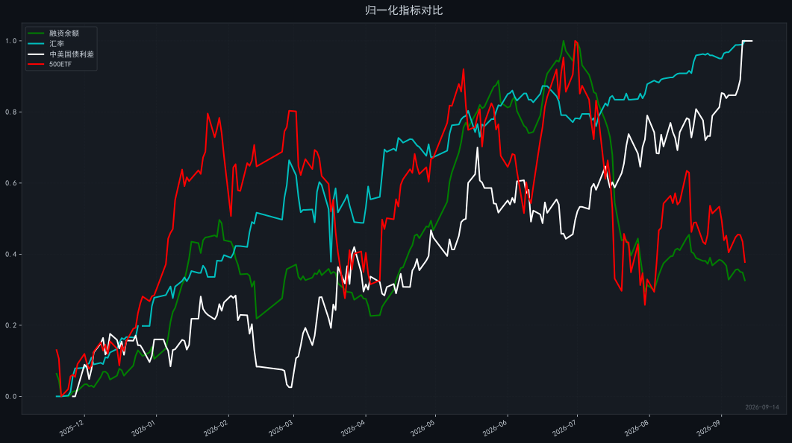
🔻 融资余额与大小盘指数同步趋势
对比融资余额变化与沪深300（大市值）和中证1000（小市值）指数的同步趋势，识别市场风格偏好。
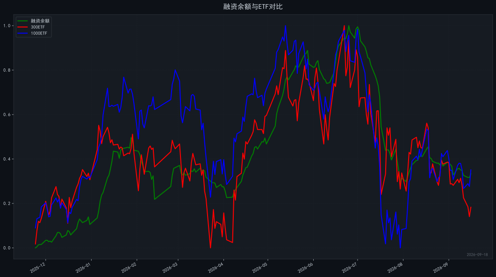
📊 融资余额分析
当前融资余额为15150亿，处于相对高位水平。当融资余额突破均线时可能预示市场情绪变化，为短线操作提供参考信号。融资余额与大盘指数呈现正相关，可作为市场热度的重要指标。
🌍 中美市场联动
分析恒生指数与美股小盘股的相关性，追踪中美政策协调对跨境资本流动的影响。
🔻 恒生指数与美股小盘股同步趋势
对比恒生指数与罗素2000（美股小盘股）的走势相关性，反映中美市场的联动效应和跨境资本流动情况。当前恒指较美股显著跑输，需关注政策协调动向。
📊 中美市场联动解读
分析恒生指数与美股小盘股的相关性，追踪中美政策协调对跨境资本流动的影响，识别跨市场套利和风险传导路径。
📉 股债利差
通过比较股票风险溢价与债券收益率，评估当前市场环境下股票和债券的相对投资价值。
🔻 股债息差分析
股债利差当前为-7.30（17分位），处于历史较低水平，表明股票相对债券的吸引力有限。股债30日相关性为-0.668，呈现负相关特征。
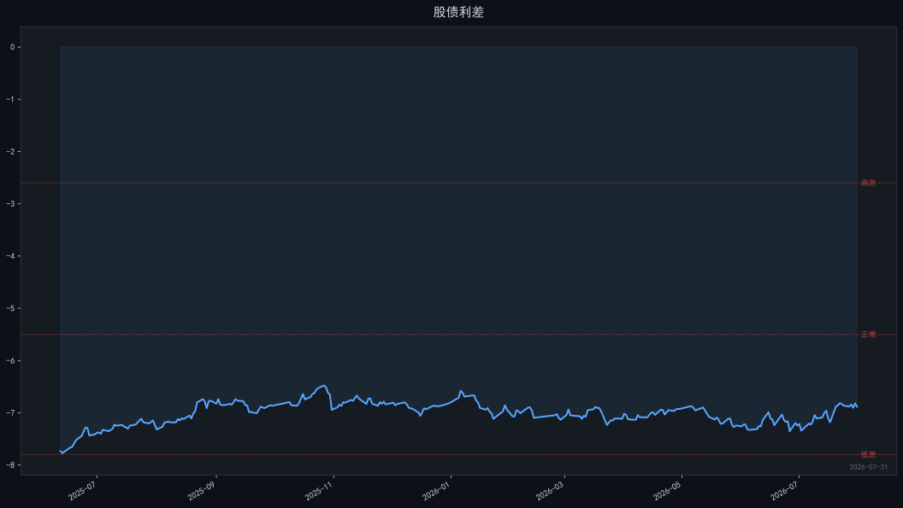
📊 股债性价比解读
通过比较股票风险溢价与债券收益率，评估当前市场环境下股票和债券的相对投资价值，为资产配置提供参考。
💧 流动性环境
分析市场资金面、货币政策和信用扩张情况，评估流动性对股票市场估值和交易活跃度的影响。
🔻 流动性分析
当前融资余额为15150亿，Shibor利率1.42%，显示市场流动性处于宽松环境。AI流动性评分为65，表明资金面支持市场表现。
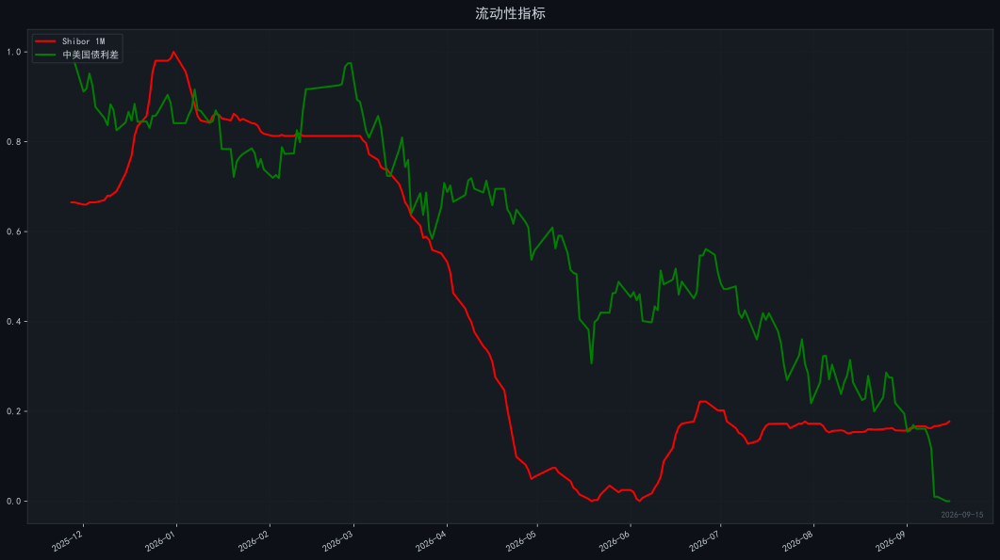
📊 流动性环境解读
分析市场资金面、货币政策和信用扩张情况，评估流动性对股票市场估值和交易活跃度的影响。
🛢️💱 油金比与国债
综合分析原油、黄金价格走势与美国国债收益率的联动关系，反映全球经济增长预期、通胀压力和地缘政治风险。
🔻 原油与黄金价格走势对比
油金比反映全球经济增长预期和地缘政治风险。当油金比上升时，通常意味着原油需求增加（经济增长预期好）或黄金避险需求下降；反之则表示经济增长预期减弱或地缘风险上升。当前原油价格与黄金价格呈现一定的负相关关系。
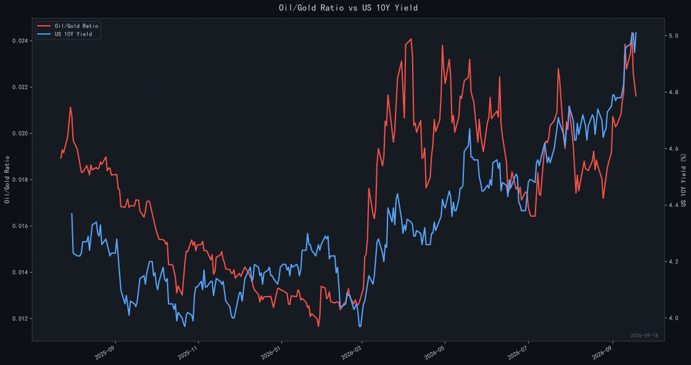
📊 油金比解读
分析原油与黄金价格的比值变化，反映全球经济增长预期和地缘政治风险，为大宗商品投资提供信号。
📈 市场分析
基于多维度市场数据的综合分析，包括核心指标、偏离预警、行业轮动和AI评分。
🏢 行业轮动
强度 10.70%
领涨: 美股医药, 美股金融
📊 指数差异
纳指-1.67%
标普+0.68% 罗素+6.34%
⚠️ 风险环境
中等风险
VIX15.81 美债4.37%
🌍 中美联动
港股显著跑输
恒指-8.97% 汇率-0.34%
💧 流动性
宽松环境
融资15018亿 Shibor1.42%
📉 股债利差
-7.30
17分位 性价比低
🛢️ 油金比
0.016
38分位 正常范围
📊 偏离信号
32个信号
高严重性: 27个
🚨 偏离预警信号
罗素2000(小盘)偏高于基准
残差83.62（阈值44.91），小盘股强势
纳斯达克100(科技)偏低于基准
残差-13.02（阈值6.10），科技股弱势
REITs(房地产)相关性断裂
历史平均相关0.65，近期-0.17，漂移-0.82
日经225偏高于基准
残差2416.94（阈值1210.09），日本股市强势
金融板块相关性断裂
历史平均相关0.84，近期0.08，漂移-0.75
恒生指数偏低于基准
Z-score(-2.12)低于基准(1.32)，分歧-3.44σ
能源板块相关性断裂
历史平均相关0.58，近期-0.30，漂移-0.88
原油价格偏低于基准
Z-score(-2.02)低于基准(0.77)，分歧-2.79σ
📊 AI综合评分
综合评分
53.8
市场状态: 中性
风险评分
50
中等风险
流动性
65
良好
估值水平
50
一般
趋势强度
50
中性
资产配置建议
📈 股票: 50%
📊 债券: 30%
🥇 黄金: 10%
💰 现金: 10%
📈 市场指标图表
综合展示市场核心指标走势，包括连板高度、热点板块数量、主升浪股票数量等关键市场情绪指标。当前行业轮动强度10.70%，价值风格主导，小盘股显著跑赢大盘。
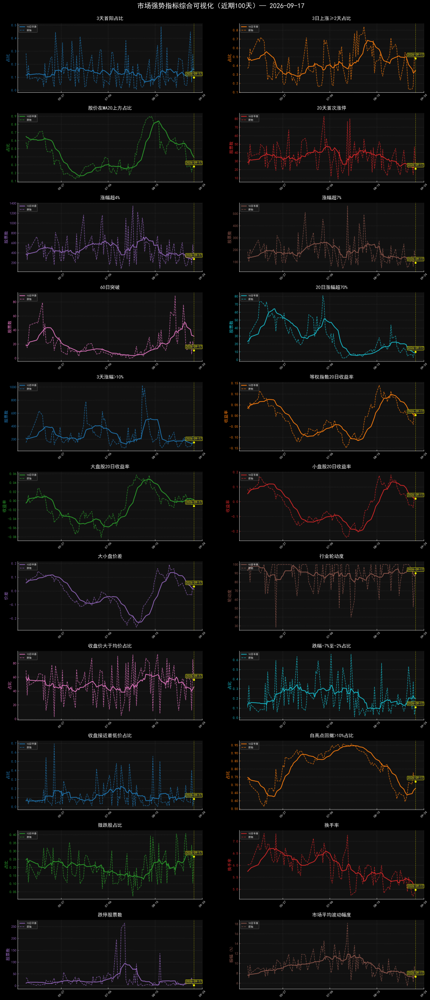
🔻 价格分位数分布
展示A股股票当前价格在历史区间中的分位分布情况，反映市场整体估值水平。结合市场分析数据，当前纳指-1.67%、标普+0.68%、罗素+6.34%，显示大盘股与小盘股表现分化明显，价值风格占优。
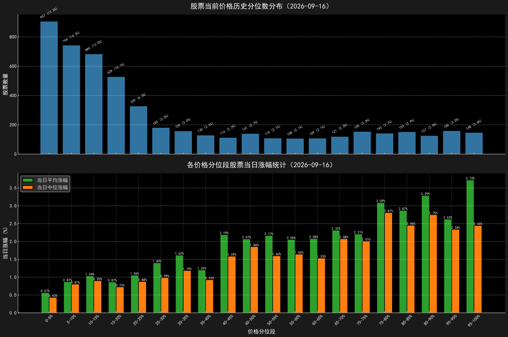
🔻 60日涨幅区间分布
统计A股股票近60日涨幅分布。与市场分析数据一致，美股医药(+8.14%)和金融(+6.95%)领涨，而科技(-3.68%)和能源(-8.76%)表现落后，显示行业轮动特征明显，市场风格向价值股切换。
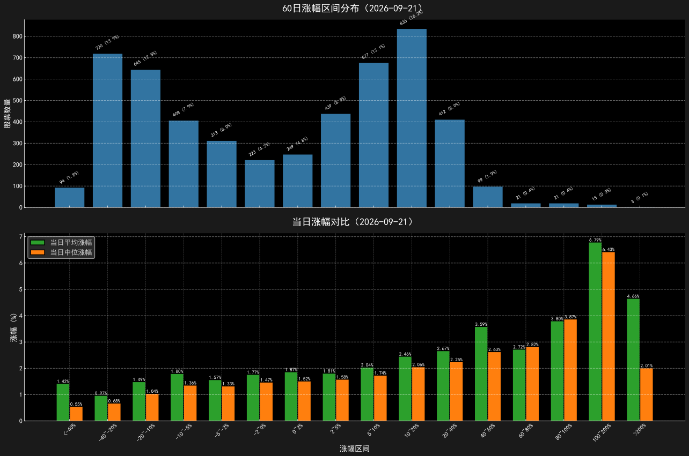
🔻 当前热点行业
近1月行业表现分析：美股医药领涨(+8.14%)，美股金融紧随其后(+6.95%)，美股工业表现稳健(+4.66%)。美股科技(-3.68%)和能源(-8.76%)表现落后，显示市场风格向价值股切换。融资余额15018亿，流动性环境宽松。
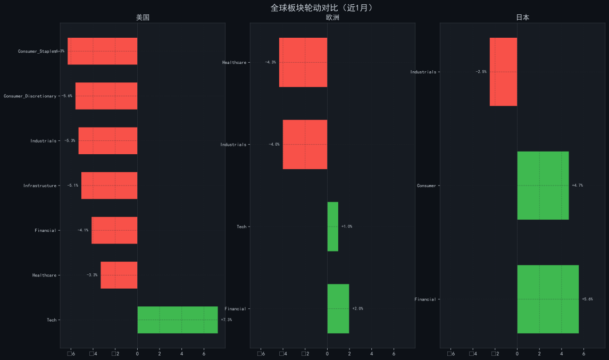
🔻 热点概念变化甘特图
展示最近7天热点概念持续时间与变化趋势。结合偏离预警数据，金融板块与标普500相关性断裂(历史0.84→近期0.08)，能源板块相关性也出现明显漂移，反映市场板块轮动剧烈。
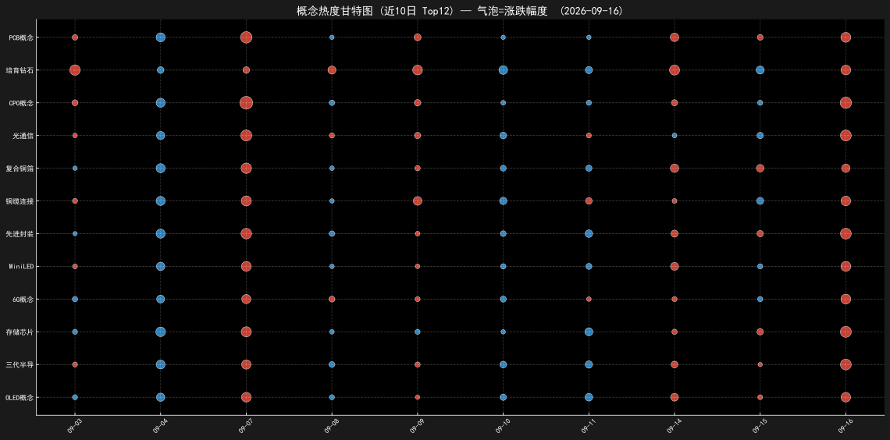
🔻 市场情绪图表
包含市场情绪关键指标。VIX当前15.81(37分位)，美国10Y国债收益率4.37%(38分位)，综合风险评分为中等。股债30日相关性为-0.668，显示股债负相关。油金比0.016(38分位)，处于正常范围。
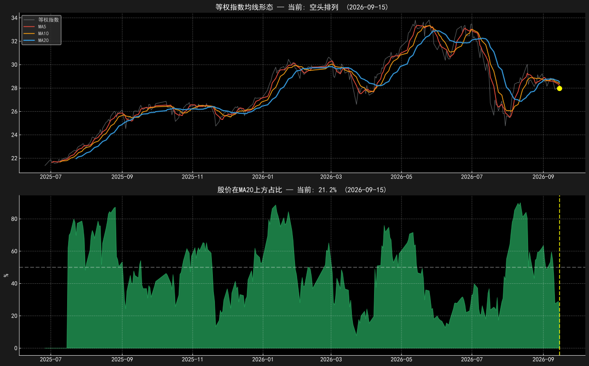
🔻 热点概念波浪分布
展示热点概念的波浪分布特征，分析不同概念板块的持续性和周期性变化规律。与行业轮动数据呼应，医药和金融板块处于上升浪，而科技和能源板块处于下降浪。
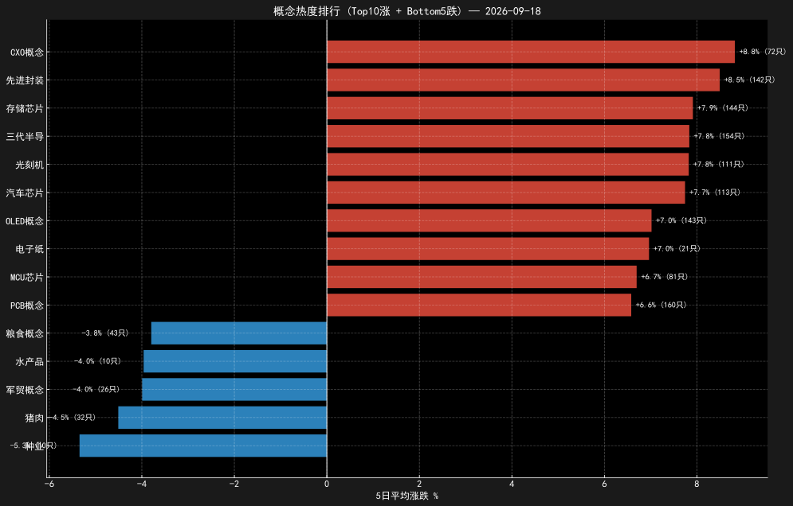
🔻 个股数量分布矩阵
展示不同板块和概念的个股数量分布情况，反映市场资金集中度和热点扩散程度。当前共检测到32个偏离信号，其中27个高严重性信号，显示市场存在较多异常偏离现象。
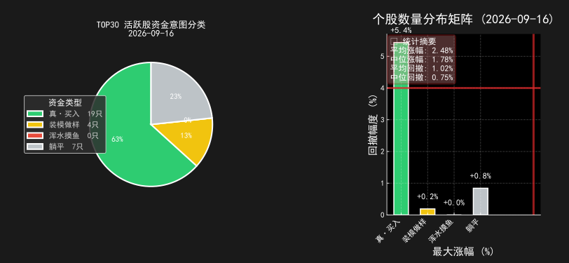
🔻 价格分位数95-100%细分
对处于价格分位数95-100%高位区间的股票进行细分分析，识别强势股特征和潜在回调风险。结合偏离预警，罗素2000(小盘)当前水平偏高于基准(残差83.62)，需关注高位回调风险。
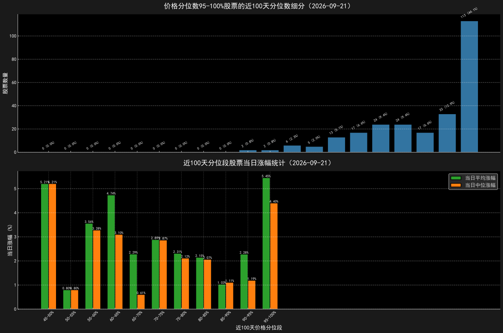
🔻 成交额集中度与价格指数
分析成交额集中度与价格指数的关系，识别市场资金流向和权重股对指数的影响。股债利差-7.30(17分位)，显示股市性价比偏低，建议关注债券配置机会。
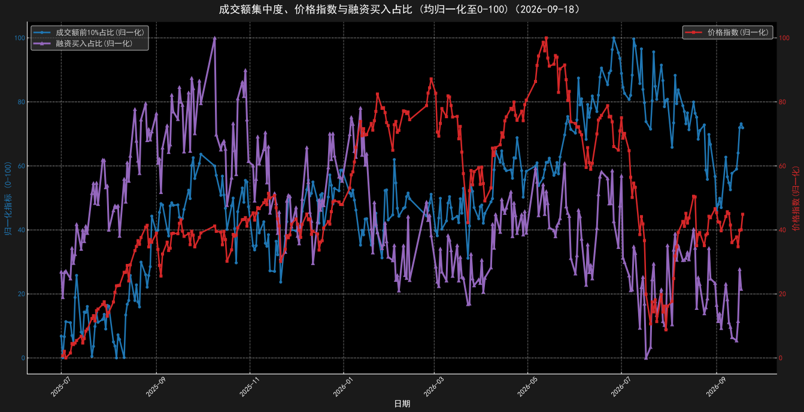
⚠️ 风险环境
基于VIX指数、债券收益率和市场波动率的综合风险评估，为投资者提供风险警示和防御建议。
📊 风险评估指标
VIX波动率
15.93
38分位
美国10Y国债
4.37%
中等风险
风险评分
50
中性
📋 风险环境解读
基于VIX指数、债券收益率和市场波动率的综合风险评估，为投资者提供风险警示和防御建议。当前市场风险处于中等水平，建议保持谨慎配置，关注美联储政策动向和地缘政治风险。
关注微信公众号
扫码获取实时更新